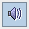
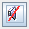
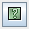

See also:
See also:
At the bottom of Colory you find some buttons described here.
| You can replay the sequence give by Colory using the replay button. The replay button is disabled if Colory mode does not allow replaying a sequence. After replay you have to repeat the sequence from the beginning. Keyboard key 'r' is an option to replay |
You can switch off/on sound effects by using Colory speaker toggle button. Keyboard key 'v' is an option to toggle.
|  | Sound effects are switched on |
|  | Sound effects are switched off |
|  | Open Colory Online Help dialog. Keyboard key 'i' is an option to open the dialog |
An exit option.
| Exit the Colory game. Save current level and settings. Keyboard key 'q' is an option |
See also: